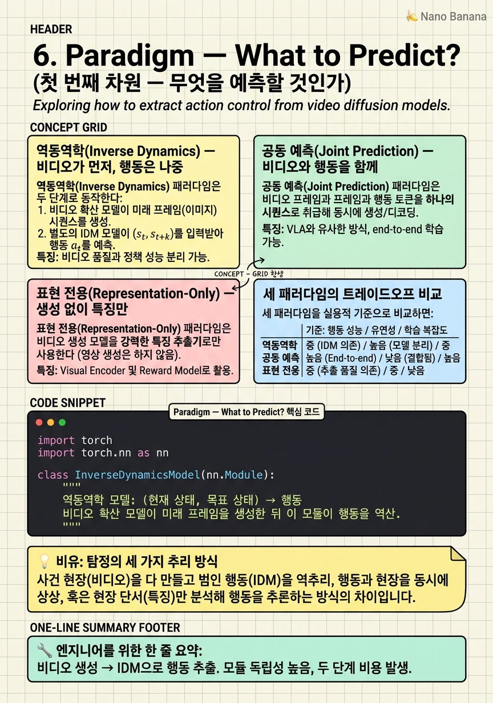

Paradigm — What to Predict?

🎯 학습 목표
- 역동역학 WAM의 두 단계(비디오 생성 → 행동 역산)를 설명할 수 있다
- 공동 예측이 역동역학과 다른 점을 이해한다
- 표현 전용 방식이 왜 추론 속도를 높이는지 설명할 수 있다
- 세 패러다임 중 어떤 상황에서 어느 것을 쓸지 판단할 수 있다
- 각 패러다임을 대표하는 실제 모델을 나열할 수 있다
WAM의 첫 번째 설계 차원은 "무엇을 예측할 것인가"다. 비디오를 먼저 생성하고 행동을 역산할 것인가, 비디오와 행동을 동시에 생성할 것인가, 아니면 비디오 생성을 아예 포기하고 인코딩된 표현만 쓸 것인가?
이 선택은 추론 속도, 메모리 사용량, 장기 계획 능력, 학습 데이터 요구사항에 직접 영향을 미친다. 2023년 UniPi(역동역학)에서 출발해 2024년 GR-1(공동 예측), 2026년 Fast-WAM(표현 전용)으로 이어지는 진화는 각 방식의 한계를 극복하려는 과정이다.
이 챕터에서는 세 패러다임 각각의 동작 원리, 장단점, 대표 모델을 구체적으로 설명한다.
핵심 내용
역동역학(Inverse Dynamics) — 비디오가 먼저, 행동은 나중
역동역학(Inverse Dynamics) 패러다임은 두 단계로 동작한다:
- 비디오 생성: 현재 프레임 + 언어 목표 → 미래 비디오 프레임 생성
- 역동역학 모델: 현재 프레임과 목표 프레임을 입력받아 그 사이에 필요한 행동 추출
\[a_t = \text{IDM}(s_t, s_{t+1})\]
ここ서 IDM(Inverse Dynamics Model)은 "현재 상태에서 다음 상태로 가려면 어떤 행동이 필요한가"를 학습한다.
UniPi(2023)이 이 패러다임의 선구자다. 텍스트 조건부 비디오 확산 모델로 미래를 상상하고, IDM으로 행동을 추출한다. 직관적이고 모듈화가 잘 된 구조지만 두 단계의 학습·추론 비용이 모두 발생하는 단점이 있다.
장점: 비디오 생성과 행동 추출이 분리되어 있어 각 모듈을 독립적으로 개선할 수 있다.
단점: 비디오 생성이 로봇 실행 불가능한 미래를 상상할 수 있다(물리적으로 그럴듯하지만 로봇 팔로는 불가능한 궤적).

공동 예측(Joint Prediction) — 비디오와 행동을 함께
공동 예측(Joint Prediction) 패러다임은 비디오 프레임과 행동 토큰을 하나의 시퀀스로 취급해 동시에 예측한다. 예를 들어:
\[[f_0, a_0, f_1, a_1, \ldots, f_T, a_T]\]
과 같은 인터리브 시퀀스를 단일 모델이 처리한다. 여기서 \(f_t\)는 비디오 프레임 토큰, \(a_t\)는 행동 토큰이다.
GR-1(2024)이 대표 모델이다. GPT-2 크기의 인과적 Transformer로 비디오 예측과 행동 예측을 동시에 수행한다. 비디오 사전학습으로 세계 지식을 얻고, 로봇 데이터 파인튜닝으로 행동을 연결한다.
장점: 비디오와 행동이 공동 학습되므로 두 모달리티의 일관성이 높다. "이 비디오가 이 행동을 만들었다"는 맥락이 모델에 통합된다.
단점: 비디오와 행동을 동시에 예측하므로 학습 데이터에 비디오-행동 쌍이 모두 필요하다. 비디오만 있는 데이터는 부분적으로만 활용된다.

표현 전용(Representation-Only) — 생성 없이 특징만
표현 전용(Representation-Only) 패러다임은 비디오 생성 모델을 강력한 특징 추출기로만 사용한다. 추론 시 비디오를 생성하지 않고, 비디오 모델의 인코더가 추출한 시각적 임베딩을 직접 행동 헤드로 전달한다.
\[a = \pi(e_\theta(\text{현재 프레임}), \text{언어})\]
여기서 \(e_\theta\)는 파인튜닝된 비디오 모델의 인코더다.
Fast-WAM(2026)이 대표 모델이다. Wan 백본의 인코더를 사용해 장면을 임베딩하고, 플로우 매칭 행동 헤드로 행동 청크를 생성한다. 비디오 생성이 없어 추론 속도가 Full WAM 대비 3~4배 빠르다.
장점: 빠른 추론, 단순한 파이프라인, 학습 비용 절약.
단점: 비디오 백본의 "상상" 능력(미래 계획)을 완전히 포기한다. 장기 다단계 작업에서 Full WAM 대비 성능이 떨어질 수 있다.
세 패러다임의 트레이드오프 비교
세 패러다임을 실용적 기준으로 비교하면:
| 기준 | 역동역학 | 공동 예측 | 표현 전용 |
|---|---|---|---|
| 추론 시 비디오 생성 | 있음 | 있음 | 없음 |
| 추론 속도 | 느림 | 느림 | 빠름 |
| 장기 계획 능력 | 높음 | 높음 | 낮음 |
| 모듈 독립성 | 높음 | 낮음 | 중간 |
| 비디오 전용 데이터 활용 | 가능 | 제한적 | 가능 |
| 대표 모델 | UniPi, DVA | GR-1, DreamZero | Fast-WAM |
어떤 패러다임이 "옳은가"는 없다. 2026년 현재 연구자들이 가장 주목하는 질문은 비디오 생성 없이도 비디오 백본의 지식이 행동 일반화에 충분히 전이되는가다. Fast-WAM의 경쟁력 있는 성능이 이 질문에 긍정적 신호를 주고 있다.
💡 비유로 이해하기
범죄 현장에서 탐정이 "무슨 일이 있었는가"를 알아내는 세 가지 방식을 생각해보자.
역동역학 탐정: 먼저 사건 전체를 영화처럼 머릿속에서 재구성한다(비디오 생성). 그 재구성된 영화를 보면서 "범인이 어떻게 움직였을지"를 역으로 추론한다(IDM). 가장 풍부한 그림을 그리지만 두 단계가 필요해 시간이 오래 걸린다.
공동 예측 탐정: 사건의 영상과 행동 기록을 함께 보면서 동시에 추론한다. "이 발자국이 이 움직임을 만들었고, 그 움직임이 저 문을 잠갔다"처럼 비디오와 행동의 맥락을 통합한다.
표현 전용 탐정: 현장 사진(이미지 인코딩)만 보고 즉시 결론을 낸다. 영화 재구성은 하지 않는다. 빠르지만 복잡한 사건에서는 틀릴 수 있다.
💻 코드 예시
역동역학 모델(IDM)을 간단히 구현해보자. 현재 프레임과 목표 프레임을 받아 그 사이에 필요한 행동을 예측한다.
import torch
import torch.nn as nn
class InverseDynamicsModel(nn.Module):
"""
역동역학 모델: (현재 상태, 목표 상태) → 행동
비디오 확산 모델이 미래 프레임을 생성한 뒤 이 모듈이 행동을 역산.
"""
def __init__(self, frame_dim=512, action_dim=7, chunk_size=20):
super().__init__()
self.encoder = nn.Sequential(
nn.Linear(frame_dim * 2, 1024), nn.SiLU(),
nn.Linear(1024, 512)
)
self.action_out = nn.Linear(512, action_dim * chunk_size)
self.chunk_size = chunk_size
self.action_dim = action_dim
def forward(self, current_emb, goal_emb):
"""
current_emb: (B, frame_dim) — 현재 프레임 임베딩
goal_emb: (B, frame_dim) — 목표 프레임 임베딩 (비디오 모델 생성)
returns: (B, chunk_size, action_dim)
"""
combined = torch.cat([current_emb, goal_emb], dim=-1)
h = self.encoder(combined)
actions = self.action_out(h)
return actions.view(-1, self.chunk_size, self.action_dim)
# 역동역학 WAM 파이프라인 시뮬레이션
def inverse_dynamics_wam_pipeline(video_backbone, idm, current_frame, lang):
# Phase 1: 비디오 모델로 미래 프레임 상상
goal_frame = video_backbone.generate_goal(
current=current_frame, language=lang
) # (B, frame_dim)
# Phase 2: IDM으로 행동 역산
current_emb = video_backbone.encode(current_frame)
goal_emb = video_backbone.encode(goal_frame)
action_chunk = idm(current_emb, goal_emb) # (B, 20, 7)
return action_chunk
idm = InverseDynamicsModel()
curr = torch.randn(1, 512)
goal = torch.randn(1, 512)
actions = idm(curr, goal)
print(f'IDM 출력: {actions.shape}') # (1, 20, 7)InverseDynamicsModel은 현재와 목표 프레임 임베딩을 이어붙여(concatenate) 행동 청크를 예측한다. 역동역학 파이프라인에서 이 모델은 비디오 생성 모델이 만든 "목표 장면"에서 현재로 가기 위한 행동을 역으로 찾는다. 비디오 모델과 IDM이 분리되어 있어 각각 독립적으로 개선할 수 있다는 것이 역동역학 방식의 구조적 강점이다.
🏭 현업에서의 평가
✅ 시니어가 보는 것
- 역동역학 IDM이 비디오 생성 모델과 독립적으로 학습될 수 있는 이유를 설명할 수 있는가
- 공동 예측에서 비디오 전용 데이터 활용이 제한되는 이유를 이해하는가
- 표현 전용이 빠른 이유와 그 트레이드오프를 명확히 설명할 수 있는가
⚠️ 레드 플래그
- 세 패러다임을 구분 없이 "모두 WAM"이라고만 설명하는 것
- 역동역학에서 IDM이 물리적으로 불가능한 궤적을 생성할 수 있다는 문제를 모르는 것
🎤 예상 인터뷰 질문
- 역동역학 WAM에서 비디오 모델이 로봇 실행 불가능한 미래를 생성하면 어떻게 처리할 수 있나요?
- 공동 예측 방식에서 비디오-행동 쌍이 없는 순수 비디오 데이터를 어떻게 활용할 수 있을까요?
- Fast-WAM이 Full WAM보다 특정 작업에서 성능이 높을 수 있는 시나리오를 설명해보세요.
✨ 핵심 요약
역동역학 = 상상 후 역산
비디오 생성 → IDM으로 행동 추출. 모듈 독립성 높음, 두 단계 비용 발생.
공동 예측 = 함께 생성
비디오+행동을 인터리브 시퀀스로 동시 예측. 높은 일관성, 풍부한 데이터 필요.
표현 전용 = 생성 스킵
비디오 인코더만 사용. 3~4배 빠른 추론, 장기 계획 능력 희생.
Fast-WAM의 교훈
비디오 생성 없이도 비디오 백본의 지식이 행동에 전이될 수 있다는 긍정적 신호.
정답 패러다임은 없다
작업의 시간 지평, 속도 요구사항, 컴퓨팅 예산에 따라 최적 선택이 달라진다.